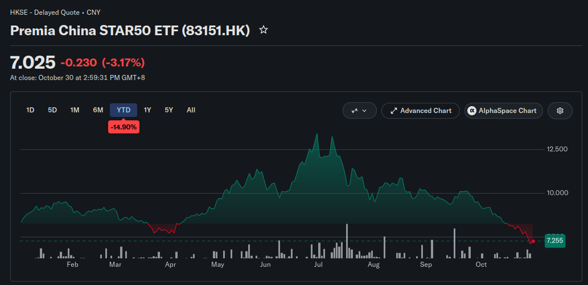
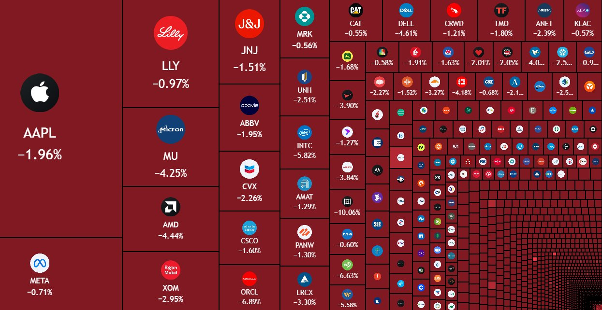

A bolha da IA estourou?
Pra ser bem sincero, ainda não podemos ter certeza, mas nesse vídeo vamos explicar os fundamentos mais básicos de por que é uma bolha e dar pra vocês a habilidade de entender o que se comenta por ai.
Veja também no canal:
-
Nos últimos dias alguns eventos tem deixado “o mercado” com medo e isso derrubou as bolsas do mundo todo:
- Quebra de expectativas após relatórios de ‘quarter’ das big techs
- Dúvidas sobre as valorações de Anthropic e OpenAI em seus possíveis IPOs
- Aumento das despesas de capital (capex) nos balanços das empresas
- Ausência de retorno dos investimentos em IA, ao mesmo tempo que o setor está engolindo todos modelos de negócio anteriores
-
Exemplo da Google (Alphabet) que sofreu uma desvalorização de U$500bi:
- Crescimento no setor de buscas (fonte principal de renda) é morno
- Investimento em data centers (compute) cada vez maior
- Grande parte do crescimento da empresa vem da valorização de ações que eles tem da Anthropic (que é a maior cliente para o seu compute)
- Ou seja, nos últimos anos a Google rifou sua principal fonte de renda e agora todo o seu crescimento é puxado pela promessa de hipercrescimento do setor de IA
- Hoje o crescimento da Google depende de uma valoração extraordinária do IPO da Anthropic
/https://i.s3.glbimg.com/v1/AUTH_e536e40f1baf4c1a8bf1ed12d20577fd/internal_photos/bs/2023/L/i/QNqtj7SxybZYjvWh2b5w/gettyimages-1239592509.jpg)
- E ao publicar sua proposta de oferta pública a Anthropic inicialmente tinha omitido os valores de seus compromissos futuros com compute (contratos por data center já fechados) e esse custo se aproxima de U$900bi
https://www.ft.com/content/4d91dbab-6fe4-45ab-beee-d77e091cb37f?syn-25a6b1a6=1
-
Talvez estejamos no meio desse estouro e não saibamos ainda. Então o objetivo aqui vai ser fazer um vídeo mais didático sobre a dinâmica da bolha econômica, para que vocês consigam interpretar as notícias e entender os próximos dias.
-
Primeiro teve o “estouro da bolha” na China que foi uma desvalorização consistente desde o pico em Julho com uma perda de U$480bi:

-
Os motivos dessa desvalorização são:
- Empresas avaliadas muito acima do que seus retornos sugerem e ceticismo sobre lucros futuros
- Dúvidas sobre a real demanda por IA, chips e infra
- Possíveis restrições de exportação dos EUA
- Um mercado de investidores sardinha com comportamento especulativo
-
E daí chegamos no Halloween (dos EUA) e no dia dos Finados daqui e temos isso acontecendo nas bolsas dos EUA:


- Vamos para o diagrama:
https://excalidraw.com/#json=lI76Wv3RupswHNS4apJIR,_In464Tcx1Y5zOtWzZ1EEg
-
Em resumo:
- Um setor de SaaS com dificuldade de lucrar extraordinariamente, com margens pressionadas e muita competição
- Investimentos e compromissos de pagamentos de infraestrutura sustentados em dívidas e financiamento circular
- Os maiores players como Anthropic e OpenAI subsidiando o custo dos tokens e dependendo de investimento quase infinito e contabilidade criativa para mostrar lucros
- O modelo de negócio real das empresas, “a economia real”, sendo deixada para trás enquanto as big techs focam tudo em capex e financiamento circular
- Os IPOs representando ‘liquidez de saída’ para os investidores originais da Anthropic. Deixando a bomba na mão do investidor sardinha
-
Vai explodir? Já explodiu? Vamos descobrir se essa tendência continuar acontecendo.
- Temos hoje a eleição de meio de mandato nos EUA e provavelmente muita coisa está ‘pausada’ até os próximos dias
- Vendo relatos da bolha .com uma coisa que chamou a atenção é que só foi possível ver em retrospecto o momento que estourou tudo. Então fiquemos no aguardo